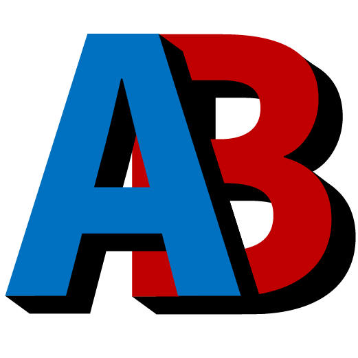
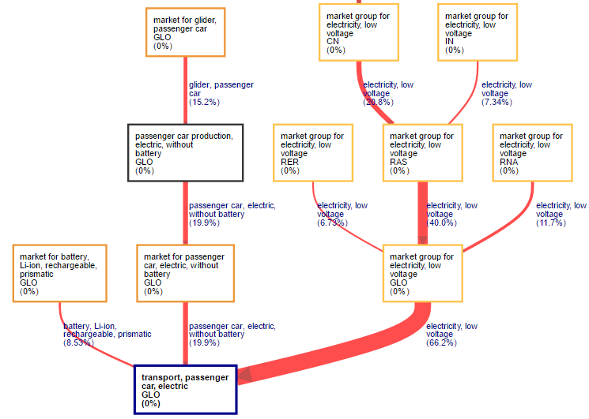

欢迎使用 Activity Browser！
Activity Browser
是一个开源图形用户界面，旨在提高使用
Brightway
生命周期评价（LCA）框架时的工作效率。
获取最新消息
AB 提供两个邮件列表：
AB 开发动态（如新版本发布）
交流 AB 相关话题的用户频道
主要功能
快速进行 LCA 计算：
可同时处理多个参考流、影响类别和情景
提升 Brightway 工作效率：
可在 Brightway（Python）中建模并在 AB 中查看结果，也可以反向操作
高级建模：
支持参数、情景（包括由
premise
构建的前瞻性 LCI 数据库）、不确定性和图形浏览器
高级分析：
支持贡献分析、桑基图、蒙特卡洛模拟、全局敏感性分析和图形浏览器
示例
LCA 结果概览
蒙特卡洛模拟
桑基图

更多信息和资源
还可以访问 Activity Browser 的：
GitHub 页面
YouTube 频道
Wiki
参与贡献
Activity Browser 是一个真正的开源项目，非常欢迎大家参与贡献。您可以通过以下方式参与：
直接在 GitHub 上提交错误报告或功能建议（无需编程经验）
为项目代码作出贡献
更详细的说明请参阅
贡献指南
。
版权与许可证
版权信息请参阅
此处
。
许可证信息请参阅
此处
。